2F

JR 신주쿠역에서 내린 당신!
신주쿠공원, 고속버스터미널, 루미네 백화점을 가려 한다면 2층으로
올라와야 한다. 2층은 남쪽 출구라고 생각하면 쉽다.
크게 버스터미널, 남쪽출구와 남동쪽 출구로 구분할 수 있다.
참고로 우리나라는 우측통행인 반면, 일본은 좌측통행이다. 에스컬레이터나 계단에서 주의하자!

JR 신주쿠역에서 내린 당신!
신주쿠공원, 고속버스터미널, 루미네 백화점을 가려 한다면 2층으로
올라와야 한다. 2층은 남쪽 출구라고 생각하면 쉽다.
크게 버스터미널, 남쪽출구와 남동쪽 출구로 구분할 수 있다.